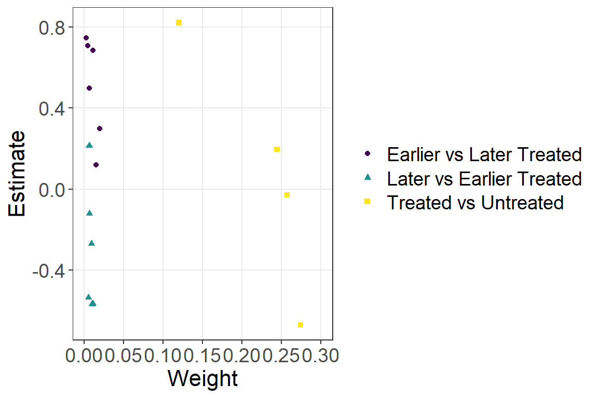
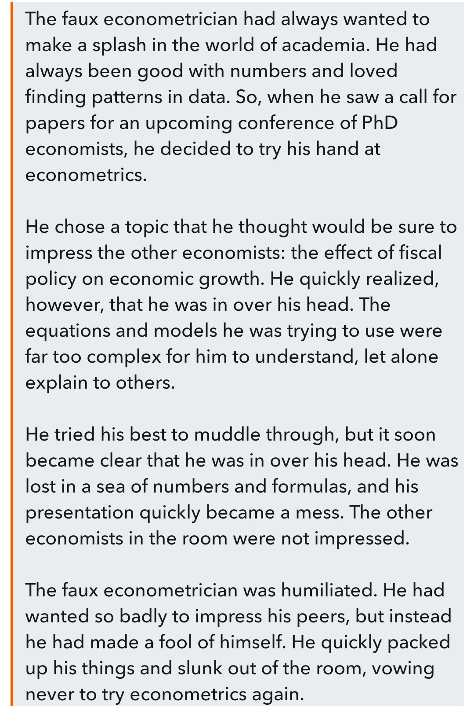

Assessing the new class of d-i-d estimators
A replication
DALL-E interpretation of my final preparation

Outline of presentation
- Background
- Problem
- Solutions
- Case study - MISTI
- Final thoughts
Bottom line up front
- In certain settings, beware the Two-Way Fixed Effects Estimator!
- Don’t conflate your modeling approach (TWFE) with your estimation strategy
- Examine the different groups created by differential timing
- Use event study designs - overall and one for each treatment cohort
- Specify a fully flexible model (Two-way Mundlak)
- Background
- Problem
- Solutions
- Case study - MISTI
- Final thoughts
D-i-D has a long and storied history
- Ignaz Semmelweis - Let’s track mortality rates in two maternity wards, one staffed with midwives and the other with medical students (who were busy with cadavers)


D-i-D has a long and storied history
- John Snow: Let’s track cholera infection in two London neighborhoods, one with treated water and one without


D-i-D has a long and storied history
- Economists - Let’s steal repeated measures ANOVA from the statisticians!
“This estimator has been labeled the difference-in-differences estimator in the recent program evaluation literature, although it has a long history in analysis of variance.” [Wooldridge 2010]
Cross Validated: Difference in Difference vs repeated measures
So what is the canonical d-i-d setup?
\(y_{it}=\beta_0+\delta_{0,t}Post_t+\beta_{1,i}Treat_i+\delta_{1,it}Post_t*Treat_i+\epsilon_{it}\)
where..
\(\beta_0\) is the comparison group at baseline
\(\delta_0\) is the secular change from baseline to endline, unrelated to treatment
\(\beta_1\) is the difference between the treatment and comparison groups at baseline, and
\(\delta_1\) is the treatment effect, the interaction of treatment and time
Algebraically, \(\delta_0\) can be expressed as the difference between the pre/post difference in each of the treatment and comparison groups
\(\delta_1=\)
\((\bar{y}_{POST,TREAT}-\bar{y}_{PRE,TREAT})\)
\(-\)
\((\bar{y}_{POST,COMPARISON}-\bar{y}_{PRE,COMPARISON})\)
hence, difference-in-differences (d-i-d or DiD or DD)
Canonical d-i-d, 2x2
\(y_{it}=\beta_0+\delta_{0,t}Post_t+\beta_{1,i}Treat_i+\delta_{1,it}Post_t*Treat_i+\epsilon_{it}\)
| Pre | Post | Post - Pre | |
|---|---|---|---|
| Comparison | \(\beta_0\) | \(\beta_0+\delta_0\) | \(\delta_0\) |
| Treatment | \(\beta_0+\beta_1\) | \(\beta_0+\delta_0+\beta_1+\delta_1\) | \(\delta_0+\delta_1\) |
| Treatment - Comparison | \(\beta_1\) | \(\beta_1 + \delta_1\) | \(\delta_1\) |
How does the canonical d-i-d generalize to multiple time periods and/or groups?
When we generalize the two-period setup to multiple time periods and/or groups, we have the two-way fixed effect (TWFE) estimator
\(y_{it}=\alpha_i+\alpha_t+\beta^{DD}{it}+\epsilon_{it}\)
where..
\(\alpha_i\) are group fixed effects
\(\alpha_t\) are time fixed effects
\(B^{DD}_{it}\) indicates whether group i in period t is treated
TWFE is a workhorse in program evaluation
744 d-i-d studies across ten journals in finance and accounting, 2000-2019 [Baker 2022]
19 percent of all empirical articles published by the American Economic Review (AER) between 2010 and 2012 used TWFE [de Chaisemartin and D’Haultfoeuille 2020]
- Background
- Problem
- Solutions
- Case study - MISTI
- Final thoughts
But what is \(\beta^{DD}_{it}\) actually telling us?
For the canonical 2x2, we know exactly what we are estimating
For i groups and t time periods, we are getting some average of multiple 2x2s
But how does this work, exactly?
Goodman-Bacon (2021) decided to work it out
Let’s take a single step from two time periods to three, where treatment can be adopted at either t = 2 or t = 3

Any design with multiple treatment timings will have \(k^2\) groups, where k is the number of timings.


Where does this leave us?
- TWFE treats some data that is under treatment status as comparison!
- Not an issue under constant treatment effect
- stable unit treatment value (SUTVA)
- no variation in treatment effect for any reason
But TWFE fails under following conditions:
- different treatment groups have different treatment effects
- treatment effects are dynamic over post-treatment periods
- heterogeneous treatment effects across sub-groups within a treated group

An example of failure


- Background
- Problem
- Solutions
- Case study - MISTI
- Final thoughts
Diagnostic: the Bacon decomposition
- The Bacon decomposition will take a TWFE model and decompose it into the full array of 2x2 d-i-d cells used to construct the overall estimate
- The decomposition will also calculate the variance-weights used in regression to see which 2x2 cells are powering the overall estimate
| treated | untreated | estimate | weight | type |
|---|---|---|---|---|
| 2005 | 2006 | -0.08313 | 0.003405 | Earlier vs Later Treated |
| 2005 | 2007 | -0.11672 | 0.002095 | Earlier vs Later Treated |
| 2005 | 2008 | -0.14123 | 0.001571 | Earlier vs Later Treated |
| 2005 | 2009 | 0.09714 | 0.001048 | Earlier vs Later Treated |
| 2005 | 99999 | 0.08017 | 0.045569 | Treated vs Untreated |
| 2006 | 2005 | -0.14607 | 0.003405 | Later vs Earlier Treated |
| 2006 | 2007 | 0.08302 | 0.016342 | Earlier vs Later Treated |
| 2006 | 2008 | -0.00848 | 0.016342 | Earlier vs Later Treated |
| 2006 | 2009 | -0.08226 | 0.012256 | Earlier vs Later Treated |
| 2006 | 99999 | 0.06824 | 0.592395 | Treated vs Untreated |
| 2007 | 2005 | -0.10806 | 0.001676 | Later vs Earlier Treated |
| 2007 | 2006 | 0.12596 | 0.010895 | Later vs Earlier Treated |
| 2007 | 2008 | 0.10372 | 0.002933 | Earlier vs Later Treated |
| 2007 | 2009 | -0.01598 | 0.002933 | Earlier vs Later Treated |
| 2007 | 99999 | 0.11406 | 0.170124 | Treated vs Untreated |
| 2008 | 2005 | -0.04898 | 0.000943 | Later vs Earlier Treated |
| 2008 | 2006 | 0.11069 | 0.008171 | Later vs Earlier Treated |
| 2008 | 2007 | 0.14479 | 0.001257 | Later vs Earlier Treated |
| 2008 | 2009 | -0.17989 | 0.000838 | Earlier vs Later Treated |
| 2008 | 99999 | 0.14605 | 0.072910 | Treated vs Untreated |
| 2009 | 2005 | 0.17952 | 0.000419 | Later vs Earlier Treated |
| 2009 | 2006 | 0.11210 | 0.004085 | Later vs Earlier Treated |
| 2009 | 2007 | 0.00373 | 0.000838 | Later vs Earlier Treated |
| 2009 | 2008 | -0.13078 | 0.000210 | Later vs Earlier Treated |
| 2009 | 99999 | 0.21108 | 0.027341 | Treated vs Untreated |
Adjustment: new estimators
R packages for new d-i-d estimators
| Reference | R package | Description |
|---|---|---|
| Callaway Sant'Anna (2020) | did | Compare treatment only to never treated, or never-treated + not-yet-treated. Also propensity score weights with covariates. |
| Sun Abraham (2020) | fixest | Fully saturate relative time indicators with treatment initiation; equivalent to Callaway Sant'Anna |
| Chaisemartin D'Haultfoeuille (2020) | DIDmultiplegt | Applies time-unit adjustments for a more general range of settings than just staggered adoption |
| Wooldridge (2021) | fixest | Dummies for all group, time, time-to-treat, time-since-treatment units |
- Background
- Problem
- Solutions
- Case study - MISTI
- Final thoughts
Measuring Impact of Stabilization Initiatives (MISTI)
Can small scale, community-driven development activities build local government legitimacy in a kinetic conflict-affected environment?
MISTI
- Village panel survey in five waves, Sep 2012 - Nov 2014
- ~5,000 villages surveyed across 130 districts and 23 provinces
- ~ 30,000 household interviews per wave
- 860 treated villages at any wave (17%)
- 355 villages surveyed in all five waves
- 85 villages treated (24%)

MISTI treatment timings
| Wave | Comparison villages | Treated villages | Treated villages (cumulative) |
|---|---|---|---|
| 1 | 355 | 0 | 0 |
| 2 | 341 | 14 | 14 |
| 3 | 322 | 19 | 33 |
| 4 | 302 | 20 | 53 |
| 5 | 270 | 32 | 85 |
Single-wave analysis
- Final reporting of MISTI relied on a series of single-wave estimations
| Measure | Wave 2-4 | Wave 2-5 | Wave 3-4 | Wave 4-5 | Wave 3-5 |
|---|---|---|---|---|---|
| Stability | 0.031 | 0.043 | 0.003 | -0.039 | -0.002 |
| Government Capacity | 0.044 | 0.054 | 0.032 | -0.038 | 0.007 |
| District Government Performance | 0.053 | 0.053 | 0.046 | -0.069 | -0.031 |
| District Government Satisfaction | 0.006 | -0.019 | 0.007 | 0.027 | 0.002 |
| Provincial Government Performance | 0.067 | 0.067 | 0.056 | -0.064 | 0.005 |
| Local Governance | 0.012 | 0.031 | 0.031 | -0.035 | 0.003 |
| DDA-CDC Performance | 0.000 | 0.035 | 0.034 | -0.064 | -0.015 |
| Local Leader Performance | 0.001 | 0.015 | -0.001 | 0.045 | 0.015 |
| Quality of Life | 0.039 | 0.016 | -0.003 | -0.012 | -0.027 |
| Resilience | 0.015 | 0.007 | 0.056 | -0.004 | 0.017 |
| Community Cohesion | -0.029 | -0.014 | -0.044 | 0.027 | 0.058 |
| Social Capital | -0.037 | -0.022 | -0.095 | 0.001 | 0.074 |
| Local Leader Satisfaction | 0.009 | 0.016 | 0.022 | 0.046 | 0.028 |
MISTI TWFE
MISTI bacondecomp
| treated | untreated | estimate | weight | type |
|---|---|---|---|---|
| 2 | 3 | 0.7473 | 0.00211 | Earlier vs Later Treated |
| 2 | 4 | 0.7093 | 0.00444 | Earlier vs Later Treated |
| 2 | 5 | 0.6868 | 0.01066 | Earlier vs Later Treated |
| 2 | 99999 | 0.8232 | 0.11998 | Treated vs Untreated |
| 3 | 2 | -0.1216 | 0.00633 | Later vs Earlier Treated |
| 3 | 4 | 0.4973 | 0.00603 | Earlier vs Later Treated |
| 3 | 5 | 0.2976 | 0.01930 | Earlier vs Later Treated |
| 3 | 99999 | 0.1964 | 0.24425 | Treated vs Untreated |
| 4 | 2 | -0.2707 | 0.00889 | Later vs Earlier Treated |
| 4 | 3 | 0.2135 | 0.00603 | Later vs Earlier Treated |
| 4 | 5 | 0.1182 | 0.01524 | Earlier vs Later Treated |
| 4 | 99999 | -0.0291 | 0.25710 | Treated vs Untreated |
| 5 | 2 | -0.5680 | 0.01066 | Later vs Earlier Treated |
| 5 | 3 | -0.5686 | 0.00965 | Later vs Earlier Treated |
| 5 | 4 | -0.5375 | 0.00508 | Later vs Earlier Treated |
| 5 | 99999 | -0.6729 | 0.27424 | Treated vs Untreated |

Callaway and Sant’Anna (2020)
This estimation gives you multiple outcomes
- Treatment by treatment group
- An overall treatment effect
- Overall dynamic effects / event study
- Treatment effects by calendar time
Callaway and Sant’Anna replication
cal <- att_gt(yname="stab_std",
tname="wave",
idname="idname",
gname="first.treat",
xformla= ~ nsp + ln_dist,
data=mistifull)
summary(cal)
Call:
att_gt(yname = "stab_std", tname = "wave", idname = "idname",
gname = "first.treat", xformla = ~nsp + ln_dist, data = mistifull)
Reference: Callaway, Brantly and Pedro H.C. Sant'Anna. "Difference-in-Differences with Multiple Time Periods." Journal of Econometrics, Vol. 225, No. 2, pp. 200-230, 2021. <https://doi.org/10.1016/j.jeconom.2020.12.001>, <https://arxiv.org/abs/1803.09015>
Group-Time Average Treatment Effects:
Group Time ATT(g,t) Std. Error [95% Simult. Conf. Band]
2 2 0.4105 0.386 -0.643 1.4643
2 3 0.9595 0.408 -0.155 2.0741
2 4 1.2952 0.435 0.107 2.4832 *
2 5 0.5136 0.452 -0.720 1.7470
3 2 -0.2553 0.250 -0.939 0.4279
3 3 0.3693 0.245 -0.299 1.0380
3 4 0.3161 0.271 -0.423 1.0556
3 5 0.2650 0.214 -0.319 0.8494
4 2 0.1522 0.217 -0.440 0.7440
4 3 -0.3197 0.282 -1.089 0.4501
4 4 0.1823 0.259 -0.524 0.8885
4 5 0.0491 0.284 -0.726 0.8245
5 2 0.3244 0.216 -0.265 0.9140
5 3 -0.1808 0.187 -0.692 0.3304
5 4 -0.1153 0.183 -0.614 0.3833
5 5 -0.5982 0.192 -1.123 -0.0731 *
---
Signif. codes: `*' confidence band does not cover 0
P-value for pre-test of parallel trends assumption: 0.46101
Control Group: Never Treated, Anticipation Periods: 0
Estimation Method: Doubly Robust
Call:
aggte(MP = cal, type = "simple")
Reference: Callaway, Brantly and Pedro H.C. Sant'Anna. "Difference-in-Differences with Multiple Time Periods." Journal of Econometrics, Vol. 225, No. 2, pp. 200-230, 2021. <https://doi.org/10.1016/j.jeconom.2020.12.001>, <https://arxiv.org/abs/1803.09015>
ATT Std. Error [ 95% Conf. Int.]
0.26 0.141 -0.0171 0.536
---
Signif. codes: `*' confidence band does not cover 0
Control Group: Never Treated, Anticipation Periods: 0
Estimation Method: Doubly Robust
Call:
aggte(MP = cal, type = "dynamic")
Reference: Callaway, Brantly and Pedro H.C. Sant'Anna. "Difference-in-Differences with Multiple Time Periods." Journal of Econometrics, Vol. 225, No. 2, pp. 200-230, 2021. <https://doi.org/10.1016/j.jeconom.2020.12.001>, <https://arxiv.org/abs/1803.09015>
Overall summary of ATT's based on event-study/dynamic aggregation:
ATT Std. Error [ 95% Conf. Int.]
0.392 0.191 0.0177 0.767 *
Dynamic Effects:
Event time Estimate Std. Error [95% Simult. Conf. Band]
-3 0.3244 0.206 -0.1916 0.840
-2 -0.0527 0.135 -0.3912 0.286
-1 -0.2104 0.136 -0.5506 0.130
0 -0.0322 0.137 -0.3746 0.310
1 0.3853 0.175 -0.0524 0.823
2 0.7021 0.234 0.1159 1.288 *
3 0.5136 0.466 -0.6541 1.681
---
Signif. codes: `*' confidence band does not cover 0
Control Group: Never Treated, Anticipation Periods: 0
Estimation Method: Doubly Robust
Call:
aggte(MP = cal, type = "group")
Reference: Callaway, Brantly and Pedro H.C. Sant'Anna. "Difference-in-Differences with Multiple Time Periods." Journal of Econometrics, Vol. 225, No. 2, pp. 200-230, 2021. <https://doi.org/10.1016/j.jeconom.2020.12.001>, <https://arxiv.org/abs/1803.09015>
Overall summary of ATT's based on group/cohort aggregation:
ATT Std. Error [ 95% Conf. Int.]
0.0037 0.116 -0.223 0.23
Group Effects:
Group Estimate Std. Error [95% Simult. Conf. Band]
2 0.795 0.372 -0.133 1.7224
3 0.317 0.220 -0.232 0.8657
4 0.116 0.220 -0.434 0.6655
5 -0.598 0.203 -1.104 -0.0924 *
---
Signif. codes: `*' confidence band does not cover 0
Control Group: Never Treated, Anticipation Periods: 0
Estimation Method: Doubly Robust
Call:
aggte(MP = cal, type = "calendar")
Reference: Callaway, Brantly and Pedro H.C. Sant'Anna. "Difference-in-Differences with Multiple Time Periods." Journal of Econometrics, Vol. 225, No. 2, pp. 200-230, 2021. <https://doi.org/10.1016/j.jeconom.2020.12.001>, <https://arxiv.org/abs/1803.09015>
Overall summary of ATT's based on calendar time aggregation:
ATT Std. Error [ 95% Conf. Int.]
0.371 0.174 0.0293 0.713 *
Time Effects:
Time Estimate Std. Error [95% Simult. Conf. Band]
2 0.4105 0.376 -0.4672 1.288
3 0.6197 0.229 0.0849 1.154 *
4 0.5242 0.190 0.0810 0.967 *
5 -0.0698 0.143 -0.4037 0.264
---
Signif. codes: `*' confidence band does not cover 0
Control Group: Never Treated, Anticipation Periods: 0
Estimation Method: Doubly Robust- Background
- Problem
- Solutions
- Case study - MISTI
- Final thoughts
What have we learned?
- In certain settings, two-way fixed effects estimation is biased in ways that we only recently came to realize
- We have to carefully think through the data generating process (logic modeling) for each individual setting
- As we get more granular data and ask deeper questions, econometric tools are starting to provide better insight into treatment dynamics
What should we do?
- For any two-way fixed effects setting, use the Bacon decomposition to diagnose any problems
- Use stacked d-i-d to remove problematic 2x2 cells, or apply any of the new estimators
- Go back to your old evaluations!!
Selected bibliography
THANK YOU!!
dkillian@msi-inc.com
Please evaluate this session!
The next slide shows two DALL-E narratives
How would you rate the quality of this session, where 1 reflects the scenario on the left, and 5 reflects the scenario on the right?
